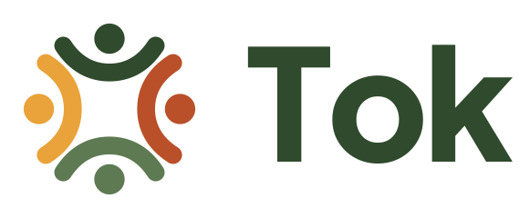

La persona
Registra su día en segundos
Sueño, energía, ánimo y dolor. Si algo sale de su rango, Tok lo muestra y la invita a conversarlo con su equipo.

Tok reúne a cada persona y a todo su equipo —médico, kinesiólogo, nutricionista, entrenador, psicólogo— en un historial único y compartido. Cada profesional decide con la información completa.
Dolor de rodilla 6/10 por tercer día seguido.
Sueño bajo su rango esta semana: 5 h 40 en promedio.
Energía y ánimo estables. Registro al día.
El entrenador tiene la carga. El kinesiólogo, la lesión. El médico, los exámenes. La nutricionista, el plan. Todo vive en sistemas separados, en WhatsApp y en PDFs sueltos, y las decisiones se toman con datos incompletos.
Tok junta esas piezas en una sola historia, sobre la que trabaja todo el equipo.
«Qué bueno hubiese sido si mi entrenador y mi médico hubiesen conversado.»Lo que nos dijeron los deportistas
En producción desde agosto de 2026, con atletas reales usándola todos los días.
Sueño, energía, ánimo y dolor. Si algo sale de su rango, Tok lo muestra y la invita a conversarlo con su equipo.
Un semáforo por persona, con la razón a la vista, para priorizar el tiempo de cada profesional.
Cada mensaje queda con autor, fecha y quién lo leyó, junto a exámenes, lesiones y adjuntos.
La persona decide qué profesional ve qué dato y puede retirar el acceso cuando quiera.
Nacimos en el deporte de alto rendimiento y hoy Tok acompaña a personas, profesionales y organizaciones completas.
Registras tu día, invitas a tus profesionales y decides qué ve cada uno.
GratisPanel con semáforo, conversación del equipo, exámenes y reportes de cada persona que acompañas.
Plan para profesionalesCada profesional de tu centro trabaja sobre la misma historia de cada persona.
Licencia por profesionalQuién necesita atención hoy y por qué, con trazabilidad para todo el plantel.
Licencia anualLa persona usa Tok gratis. Pagan los profesionales y las organizaciones que trabajan con ella. Te contamos el plan que calza con tu equipo cuando solicitas acceso.
Sizigia Lab es responsable legal de los datos de la plataforma y diseñó Tok para cumplir la Ley 21.719 de protección de datos personales desde el primer piloto.
Tok conecta al equipo. El diagnóstico y las decisiones clínicas siguen en manos de cada profesional.
Cuéntanos quién eres y con cuántas personas trabajas. Te mostramos cómo se vería tu equipo conectado en Tok.
Sizigia Lab reúne medicina, tecnología, suplementación y bienestar para personas y organizaciones, desde Pichilemu, Chile.
Más de 15 años de práctica médica y más de 7 acompañando a deportistas de alto rendimiento.
Diseña la plataforma y su modelo junto a atletas, profesionales y organizaciones.